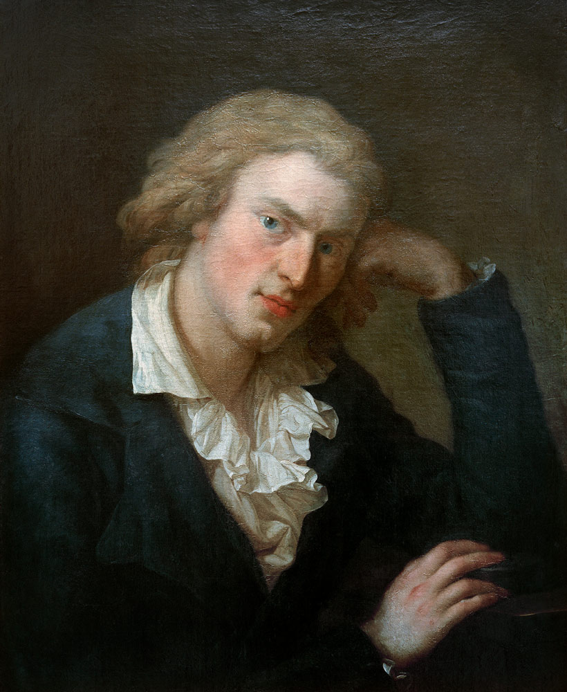
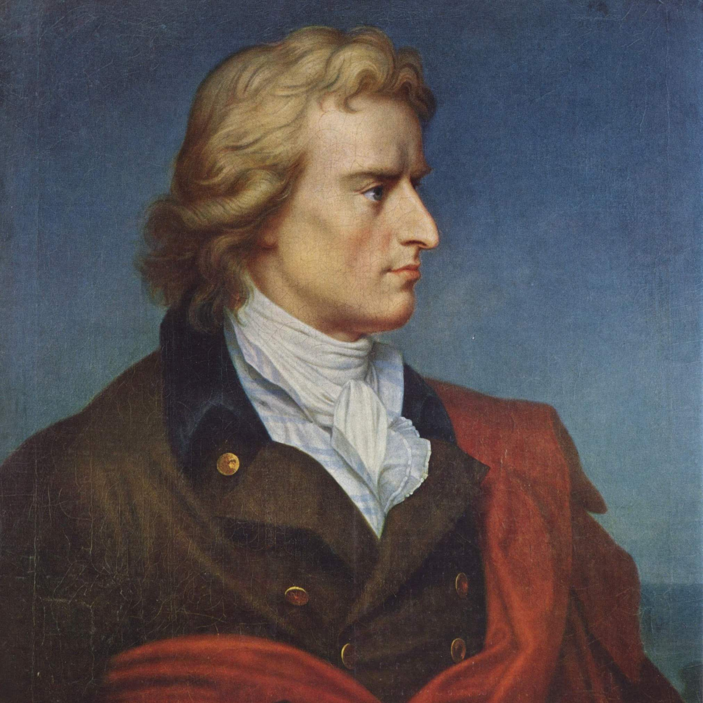
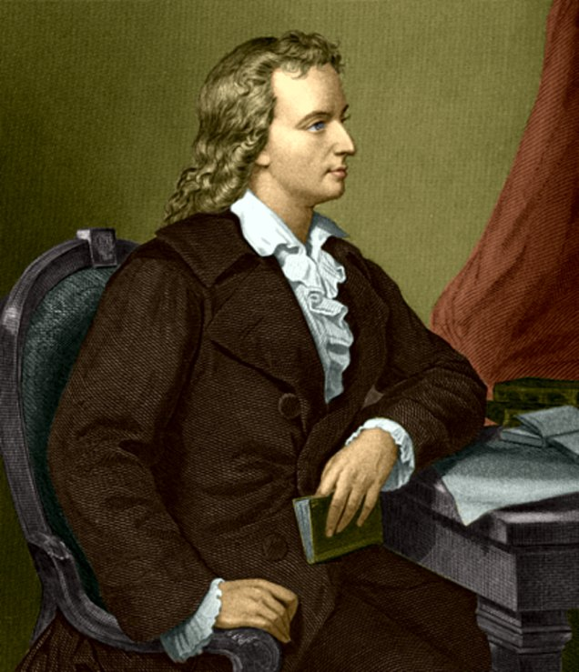
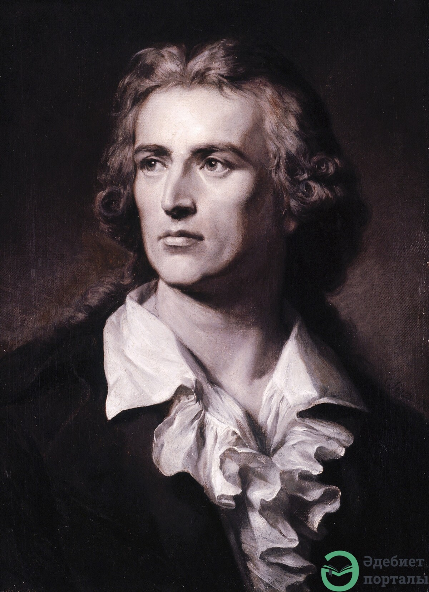

_FriedrichSchiller_
4 bejegyzés
50K követő
438 követés
Bölcsességed legyen az őszhaj bölcsessége:
de szíved - szíved legyen az ártatlan gyermekség szíve!
Követőim, ne féljetek érezni — az tesz igazán emberré.
Bejegyzések
Mentve
Jelölések



